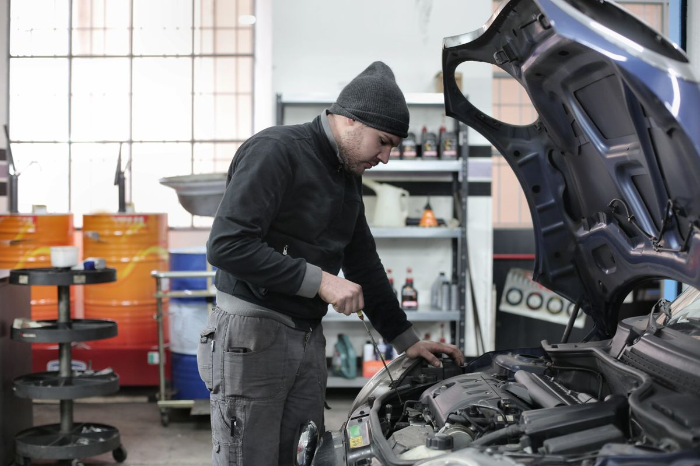
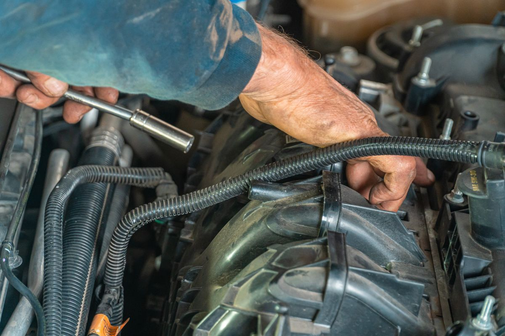
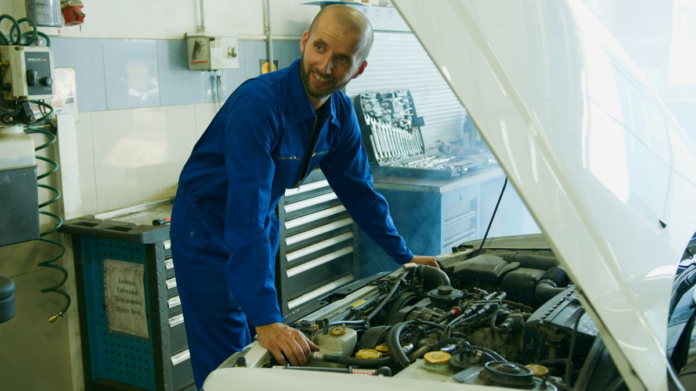

Dennis Auto Repair
Family-owned auto repair in Pensacola, with 60+ years of combined technician experience.
About
Dennis Auto Repair is a family-owned auto repair shop on Mobile Highway in Pensacola. The technicians have 60+ years of combined experience, every service carries a 12-month warranty, and the shop uses parts from reputable brands.
Auto repair, done right
General auto repair
Family-owned shop; 60+ years of combined technician experience.
12-month warranties
Every service carries a 12-month warranty.
Quality parts
Parts from reputable brands.
Family-owned, with a 12-month warranty
Dennis Auto Repair is a family-owned shop at 7207 Mobile Hwy in Pensacola. Every service carries a 12-month warranty, and the shop uses parts from reputable brands. Call (850) 912-8998 or email dennisautorepair71@yahoo.com to ask about a repair.
Gallery


All gallery photos are stock photos, labeled as such. They show auto repair work, not this shop's technicians or jobs.
Visit
Address: 7207 Mobile Hwy, Pensacola, FL 32526
Hours: Monday to Friday 8:00 AM to 5:00 PM.
Phone: (850) 912-8998
Email: dennisautorepair71@yahoo.com
Contact
Call (850) 912-8998 Email dennisautorepair71@yahoo.com
Dennis Auto Repair serves Pensacola, FL. Questions? Call (850) 912-8998.